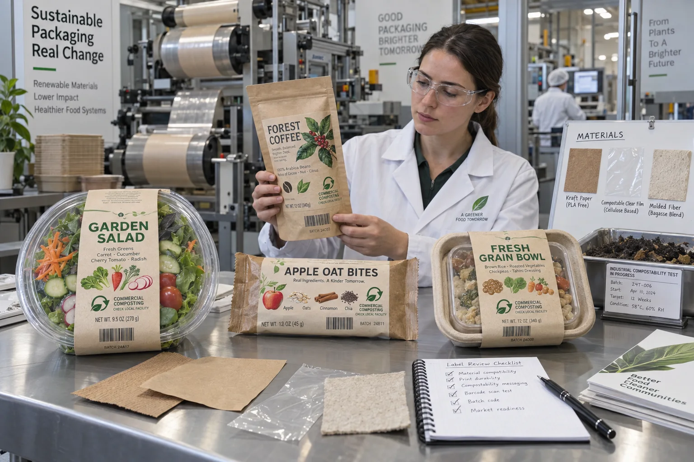

Short answer
A label for compostable packaging should be selected as part of the complete certified pack, not as a decorative add-on. Face material, adhesive, ink, coating, label area and disposal message can all affect whether the package performs and whether a claim is supportable.
The most common buyer request is “give me an eco label.” Usually that means brown paper and green ink. It may look environmentally familiar, but compostability is a test result and certification scope, not a color palette.
Why the whole pack matters
Certification bodies evaluate products against defined compostability standards and eligibility rules. Components such as adhesives, inks and coatings may be small by weight, but they still enter the finished construction. BPI's current certification resources list approved products and distinguish commercial from home compostability.
| Component | Question | Common mistake |
|---|---|---|
| Package body | What certification and thickness apply? | Assuming all PLA or fiber packs share one status |
| Label face | Is this exact paper or film included or approved? | Choosing by natural appearance |
| Adhesive | Is its chemistry and coat weight compatible? | Using a standard permanent adhesive without review |
| Ink and coating | Are colorants and coverage within scope? | Adding heavy flood color after certification |
| Claim and mark | Who licenses the certification artwork? | Drawing a similar leaf icon and implying approval |
A composite launch: the pouch passed before the label arrived
This is a composite planning example. A snack brand sources a certified compostable pouch and later orders a glossy BOPP pressure-sensitive label because it prints beautifully and runs well on its applicator. The label is small, so the team assumes it cannot matter.
I understand that instinct. In ordinary label work, a small patch often feels like a secondary component. Here it changes what enters the compost stream. The right answer is to return to the certifier or package supplier with the exact label construction and coverage, not to estimate importance by eye.
Paper, compostable film or direct print?
Paper labels can suit molded fiber, kraft and paper-based packs when moisture and barrier needs allow. They still need a reviewed adhesive and ink system. Compostable film labels may fit clear compostable packs and wet food use, but the exact polymer and certification matter. Direct printing can remove a separate face material, yet inks and coatings remain part of the package assessment.
Sometimes the most responsible label is no separate label at all. A small directly printed code area or a compostable band may simplify the construction. Pressure-sensitive labels still win when SKU flexibility, short runs and late-stage application reduce obsolete packaging.
Commercial composting is not home composting
Commercial systems typically operate under managed conditions that differ from a backyard pile. A package intended for industrial composting should say so clearly and should not imply universal curbside or home acceptance. “Check local facility” is less glamorous than a giant green promise, but it is more useful.
BPI's labeling guidance emphasizes recognizability because look-alike conventional packaging can contaminate organics streams. That means label design has two jobs: identify the product and help the user place the package in the correct stream.
Factory-side view
Green ink is cheap; a defensible claim is not
We can print a leaf on almost anything. That does not make the thing compostable.
When a buyer removes an unsupported icon after review, the label may look slightly less ambitious. The package becomes more credible.
Design disposal information for real use
- Name the intended route: commercial or home composting.
- Use licensed certification marks exactly as permitted.
- Keep disposal instructions visible after the package is opened.
- Avoid recycling arrows that could confuse composting with conventional recycling.
- Translate instructions for the actual sales markets.
- Confirm whether consumers must remove any closure, liner or label component.
Where a conventional package can honestly win
If local composting infrastructure does not accept the proposed pack, a recyclable mono-material package with a compatible label may create a clearer disposal route. Compostability is not a universal hierarchy above recycling. The product, contamination with food and local collection system decide which route has practical value.
Quote and certification checklist
- Provide the package supplier, material code and certification record.
- State commercial or home composting and destination market.
- Define label size, coverage and application surface.
- Review face, adhesive, ink and coating as one construction.
- Submit the complete labeled pack to the responsible certifier or assessor.
- Approve disposal language and licensed marks before printing.
- Test application, moisture resistance and end-of-life requirements separately.
Use BPI's official compostable product labeling guidelines and certified product catalog for North American claims. For the material trade-off on ordinary packs, see Paper vs Film Food Labels.
Frequently asked questions
Can a normal paper label go on compostable packaging?
It may physically stick, but that does not prove the labeled package remains eligible for a compostability claim. The face, adhesive, inks and amount used should be reviewed within the applicable certification scope.
Is kraft paper automatically compostable?
No. Kraft appearance says little about coatings, wet strength, adhesive, ink or certification. Ask for documented material identity and the status of the complete labeled package.
What is the difference between home and commercial composting?
They are different environments with different temperatures, time and certification requirements. A product certified for commercial composting should not be presented as home compostable unless that separate claim is supported.
Should compostable packaging display a compostability mark?
Only use certification marks under the certifier’s licensing and artwork rules. Clear disposal instructions and local availability language are also important because acceptance differs by market.
Related label guides
- Food-Contact Printing Inks for Labels: Buyer Guide
- Peel-and-Reveal Labels: Extended Content Guide
- Scuff-Resistant Labels: Rub Testing and Finishes
Review the complete label construction
Send package photos, material details, finished label size, quantity by artwork, storage conditions and application method. We can review fit, material and production details before preparing a quote and digital proof.